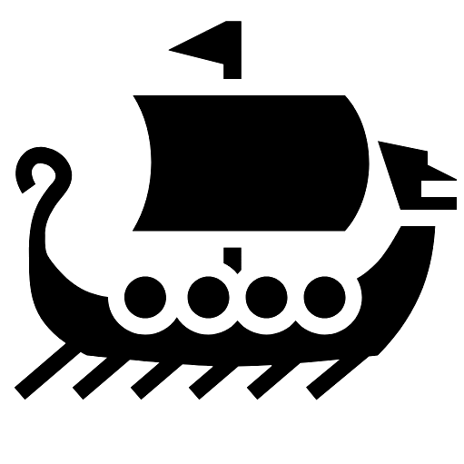

Sobre el sitio
Ragnar Lodbrok es uno de esos personajes legendarios en que la historia y la leyenda se funden, haciendo difícil saber en dónde empieza una y termina otra.
Sin embargo, sus acciones militares le hicieron ganar un lugar privilegiado en el panteón de la historia, posicionándolo con mayores elogios al haber sido el padre de otros grandes vikingos.
Se le asocia con el asedio de Paris en 845 D.C., incluyendo incursiones vikingas en Inglaterra y el Báltico.
No se conoce a ciencia cierta el período de su reinado, su fecha de nacimiento o muerte, junto a otros relatos de su vida que no han quedado completamente esclarecidos.
Este sitio web busca dar algunas pinceladas de ese personaje de la historia tan enigmatico para algunos.